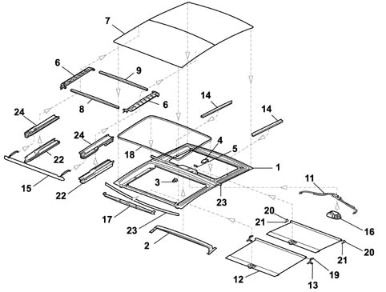
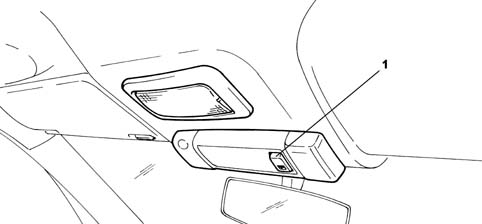
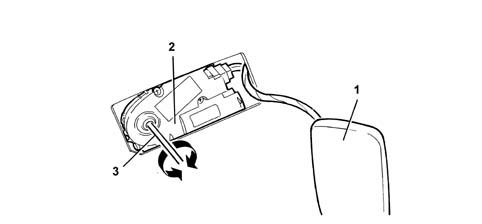
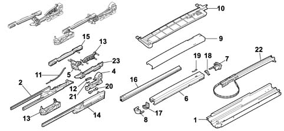

Introduction - SUN ROOF AND HOOD
- Path
- Descriptions > 70 FITTINGS > 7030 SUN ROOF AND HOOD > Introduction - SUN ROOF AND HOOD
- Kind
- system description
- Applies to
- all engines; all production periods
- Interactive page
- https://sloeber94.github.io/elrnDB-fPnd/en/#/2753490
Applies to: all engines; all production periods
All vehicles can be fitted as an option with a large Skydome sun-roof with two glass panels, one fixed and the other mobile. The sun-roof is adjustable by means of a selector to nine positions in addition to the closed position. This allows the air flow around the passenger compartment to be optimised. To ensure safety during movement, the sun-roof is fitted with an anticrush safety device that cuts out movement in the presence of obstacles.
Applies to: all engines; all production periods
The sunroof unit is all-in one. The glazed area extends in direction Y from the right channel to the left. It extends far enough in direction X to replace 70% of the roof area. The glazed surface is split into two panels, a tinted fixed panel at the rear and a tinted sliding panel at the front. The front panel is operated by a one-touch switch adjustable by means of a selector to 9 positions (three tiling or spoiler - Z, six sliding -X) plus closed position by means of an electric motor.
A sealing strip around the opening of the sun-roof sliding section is in contact with the roof profile. This abuts against the front sliding panel profile.
The roof is fitted with two manually-operated sliding sun blinds (roller blinds) that screen out the light.
The selector is located on the front courtesy light and controls the electric operating motor by means of a control unit. The sun-roof is moved by the motor pinion that pulls two flexible racks to which are anchored the guides that pull the expanding pulleys that support the sun-roof sliding panel.
To limit possible damage to passengers or objects caused by the roof when in movement, an anticrush function is active during roof closure, when the panel is sliding and also during tilt manoeuvres.
Applies to: all engines; all production periods
The figure shows the sun-roof components

1 - Frame 2 - Frame reinforcement 3 - Front roller stop 4 - Rear roller stop 5 - Rear roller catch 5 - Rear roller catch 7 - Front glass 8 - Sliding glass front reinforcement 9 - Sliding glass rear reinforcement 10 - Rear glass 11 - Rack guides _ 23 - Weather strips 12 - Roller set sun blind 13 - Front roller lock plate 14 - Sunblind panel slide guides 15 - Deflector 16 - Motor with CTA 17 - Deflector guard 18 - Frame seal 19 - Front roller mounts 20 - Rear roller mounts 21 - Rear sunblind end travel block 22 - Slide mechanism guides 23 - Weather strips 24 - Slide mechanisms
Applies to: all engines; all production periods
The system consists of:
- an electric displacement motor with Hall-effect position and speed sensors;
- a frame with two compartments, the rear for the fixed panel, the front for the sliding panel. The slide mechanism is a flexible rack system;
- an electronic control unit built into the electric motor assembly;
- a selector (one touch) used to move the sun-roof to different positions.
Applies to: all engines; all production periods
The opening front panel is opened by operating the one-touch open/close switch/selector on the front central courtesy light. This supplies the motor to turn the pinion that draws the rack along the guide on the frame.
The motor moves flexible pulling racks housed in seats on the frame. These are anchored to extending mechanisms that support the sun-roof, which is moved to the required point or position.
The sun-roof is equipped with an underlying blind that can be slid along by hand by means of a handle. This is designed to keep out sunlight.
Applies to: all engines; all production periods
Sun blind
The front and rear polyester blind to keep out sunlight are sliding, roller type. They can only be operated manually and slide in guides supported by Teflon slide pads interspersed with rubber bearings between pad and guide.
These are equipped with a handle at the front that can be grasped with a catch to hold the blind open.
The sun-roof may be moved manually by means of the selector under the following conditions:
Applies to: all engines; all production periods
Roof opening.
Roof opening with key-on.
With key-on, the front glass panel is opened in AUTOMATIC mode if the button is pressed for longer than 300 msec. The mechanism moves the glass from fully closed to fully open in spoiler position.
When you press the same side of the button again for >300 ms, the front glass pane moves to fully open position.
After the initial opening command, the front glass panel may be stopped in intermediate positions by pressing the button again.
The front glass panel may be opened in MANUAL mode by pressing on the side of the button for <60 to <300 ms.
The front glass panel moves from fully closed in proportion to the time the button is pressed from <60 and <300 ms. It stops in this position when the button is released. When the same side of the button is pressed again, within a time period between <60 and <300 ms, the front glass panel moves step by step to fully open position.
This function allows the front panel to be moved to intermediate positions between the positions achievable automatically.
Applies to: all engines; all production periods
Roof closure
Roof closure with key-on;
The front glass roof panel closes AUTOMATICALLY when one side of the button is pressed for >300 ms.
The front glass roof panel moves from fully open to swivel open position. When the button is pressed on the same side for > 300 ms, the front glass panel moves to closed position.
The front glass roof panel closes MANUALLY when one side of the button is pressed for <60 to <300 ms.
The front glass panel moves from fully open in proportion to the time the button is pressed from <60 and <300 ms and stops in the position where the button is released. When the same side of the button is pressed again, within a time period between <60 and <300 ms, the front glass panel moves step by step to closed position.
This function can be used to position the front panel in intermediate positions between the automatic closure positions.
Applies to: all engines; all production periods
ANTIPINCH FUNCTION
To limit possible damage to passengers or objects caused by the roof when in movement, an anticrush function is active during roof closure, when the panel is sliding (X) and also during tilt (Z) manoeuvres.
If effort in excess of a given threshold is detected, the control unit interprets this as an obstacle and stops movement immediately before moving the roof back by about 10 cm if it is sliding - or in the fully open position if it is tilting.
The anticrush protection can be cut out by setting the selector to the inhibition position as follows:
- select the required position;
- press the selector down vertically and hold down during movement until the selected position is achieved.
Applies to: all engines; all production periods
SELECTOR
View of ONE-TOUCH control selector

(1 - Closed position (2 - Tilted open position
Applies to: all engines; all production periods
CTA CONTROL UNIT
Sun-roof movement is controlled by an electronic control unit housed in the casing integral with the motor. The unit processes signals from the selector or remote control via the body computer and also controls the anticrush protection function.
The function is controlled by the control unit, which receives position and speed information from Hall effect sensors fitted to the crankshaft.
When effort in excess of a certain threshold is detected, corresponding to a higher current uptake and a reduction in engine rpm after a time, this is interpreted as an obstacle. The CTA then stops the roof immediately and moves it back in the opposite direction by about 100 mm.
The control unit also receives a vehicle speed signal because the vacuum created at certain speeds could change the effort required to close the roof and under certain conditions this could be interpreted as an impediment.
The control unit therefore uses this signal to ensure movement is not halted inadvertently.
- +30 direct from battery:
- +15 Key-on:
- Signals (down) from switch
- Signals (up) from switch
- Dedicated odometer signal
- Earth
Applies to: all engines; all production periods
RESETTING THE CONTROL UNIT MEMORY
The electronic control unit for the sun roof can lose the memory containing the positions as a result of a break in supply during roof movements. Proceed as follows to reset the memory:
- Turn the ignition key in the ON position
- Move the selector to closed position
- When you keep the button pressed in this position, the roof closes in steps
- Keep holding the button down and wait for the roof to close fully and the motor to stop
- Release the button: initialisation complete
Applies to: all engines; all production periods
EMERGENCY MANOEUVRE
The sunroof motor is housed in the middle of the roof.
View of activation points for emergency movement.

Sun roof motor 1 - Trim cover 2 - Electric control motor 3 - Operating key
Applies to: all engines; all production periods
EMERGENCY MANOEUVRE
If the electric movement device fails to operate, the sun-roof may be moved manually as described below:
- prise up the engine trim cover;
- fit the tool provided in the seat on the motor;
- turn the key in the direction you wish to move the sliding roof
Applies to: all engines; all production periods
PROCEDURE FOR ALIGNMENT ON THE CAR
If repairs require both sun-roof and motor to be removed at the same time and then refitted, if you are not sure that the sliding guide position has been maintained, restore alignment between the two guides before the parts are refitted because sun-roof alignment is no longer guaranteed and water and air may enter.
To restore guide alignment, proceed as follows with the motor disconnected:
- move the support guides by hand until they are fully opened on both sides and ensure that sliding has completed;
- move the support levers into (roof closed) position;
- align the slide guide reference points as shown in the following figure;
View of guide alignment procedure.

1 - Mechanism guide 2 - Internal glass holder 3 - Safety hook 4 - Hinge 5 - Central lift lever 6 - Guide profile 7 - Guide profile insert 8 - Guide profile end section 9 - Glass anchorage profile 10 - Base reinforcement profile 11 - Deflector spring 12 - Lock lever 13 - Front lift lever 14 - Outer glass holder 15 - Glass slide holder 16 - Side bellows guard 17 - Rear profile end section 18 - Front profile end section 19 - Telescopic mechanism spring 20 - Hinge retaining clips 21 - Mount locking spring 22 - Telescopic fitting cable 23 - Central guide profile